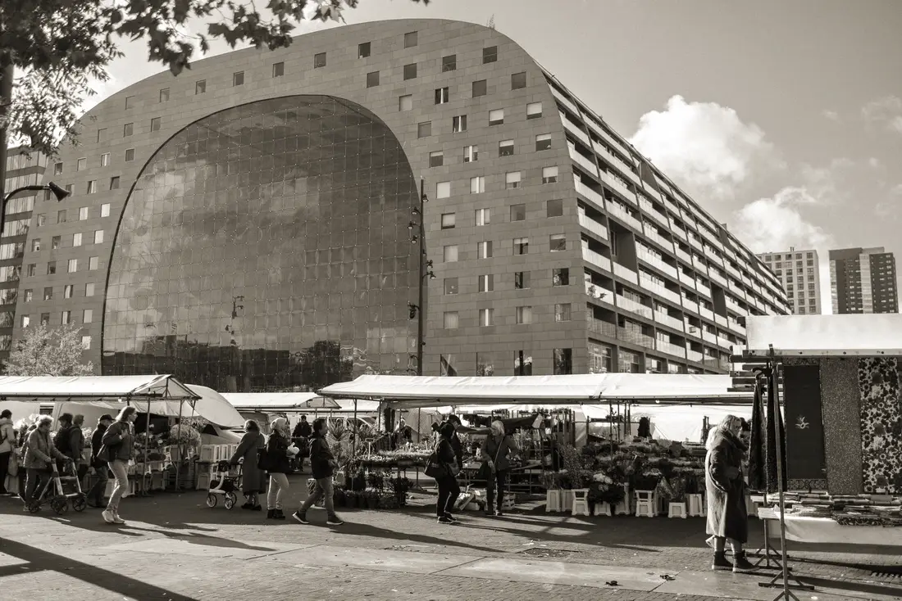

A consulting team, at no cost, on your hardest question.
If your organisation's primary goal is impact rather than profit, you likely qualify. Student consultants do it for the experience and the mission; quality is protected by our review system, not a fee.

How it works, week by week
A scoping call
A structured discovery conversation: your challenge, your constraints, what success looks like. One hour, and it commits you to nothing.
A written proposal
A scope you sign off on — what we will answer, what we won't, and what you'll hold at the end. No surprises mid-project.
The project
A team of 4–6 student consultants with a dedicated team lead. A mid-point review where you course-correct, and working sessions as the analysis firms up. Your time: about an hour a week.
A board-ready presentation
Presented to you and yours, with every underlying analysis handed over. Yours to use, cite, and build on.
Why free doesn't mean unchecked
Every deliverable passes an AI-assisted senior review before it reaches you — the full story is on the home page, and the system itself is on GitHub.
Case study — with client consent
Case study — with client consent
What we can take on
- Digital Transformationthe right tools, so a small team stops losing hours to manual work
- Marketing & Engagementreaching the audiences your mission serves — and its donors and volunteers
- Financial Sustainabilityfunding models that survive beyond the next grant cycle
- Market Assessmentevidence on demand, partners, and competition before you commit
- Operational Efficiencyfinding where effort leaks out of your processes
- Impact Measurementthe numbers that prove your work works, for boards and funders
Start the scoping call
Four fields. We reply within a week, usually faster — one email from a person, not a sequence. The call itself commits you to nothing.
A small honesty note: this form is a design preview — it goes live with the site.